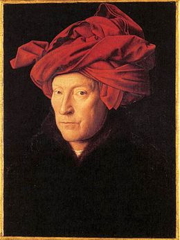

Jan van Eyck
Jan van Eyck la date et le lieu de naissance exacts du peintre restent inconnus. Selon les écrivains et historiens flamands Lucas D'Heere (1559) et Marcus van Vaernewijck (nl) (1568), Jan van Eyck serait né à Maaseik, dans la région mosane, à l'époque située dans la principauté de Liège et actuellement dans la Province de Limbourg (Belgique). Cette information est corroborée par le fait que quelques textes de la main du peintre sont écrits en dialecte mosan et par le fait qu'en 1449, la fille de Jan entre dans un couvent de Maaseik. Il pourrait être né aux alentours de 13901.
Très peu de choses sont connues de sa famille. Plusieurs Van Eyck sont signalés pendant cette période à Maastricht. On lui connaît deux frères : Hubert, peintre, est installé à Bruges et entame la réalisation du retable de L'Agneau mystique à Gand, décédé en 1426 ; Lambert, lui aussi peintre, est mentionné dans un livre de compte du duc de Bourgogne en 1431 et est sans doute l'auteur d'un portrait de Jacqueline de Bavière dont on conserve une copie dessinée. Il pourrait être aussi lié au peintre de René d'Anjou, lui aussi d'origine mosane et portant le même nom : Barthélemy d'Eyck2,3.

histoire:
Peu de choses sont connues du tableau avant qu'il ne rejoigne la National Gallery de Londres.
En 1516, le tableau appartient à Marguerite d'Autriche. Un inventaire dressé cette année-là le décrit ainsi « Un grand tableau qu'on appelle Hernoul-le-Fin avec sa femme qui fut donné à Madame par Don Diégo, les armes sont en la couverture dudit tableau. Fact du peintre Johannes1,N 1. »
En 1524, un autre inventaire des possessions de Marguerite d'Autriche donne la description suivante :
« Un autre tableau fort exquis qui se clot à deux feuillets, où il y a peint un homme et une femme, étant debout, touchant la main l'un de l'autre, fait de la main de Johannes, les armes et devise de feu Don Diego est dit deux feuillets. Nommé le personnage : Arnoult fini3. »
Le tableau passe ensuite aux mains de Marie de Hongrie, qui l'emporte en Espagne, où il figure dans un inventaire dressé en 15584.
Dans un livre sur les antiquités flamandes publié en 1568, Marcus van Vaernewyck affirme que le tableau aurait été acheté par Marie de Hongrie à un barbier de Bruges et le décrit comme un petit tableau d'un homme et d'une femme se tenant par la main et comme unis par la foi5,N 2.
description:
Le tableau représenterait Giovanni Arnolfini19, riche marchand toscan établi à Bruges (portant un pourpoint noir et une huque de velours violet doublée de fourrure), et son épouse Giovanna Cenami (portant une robe bleue, une huve blanche, un surcot vert bordé de fourrure grise20), un petit chien aux pieds, car le sujet exact du tableau est un sujet de discussion pour les historiens de l'art. Selon Erwin Panofsky, il s'agirait du mariage des deux personnages, célébré en privé, et dont Van Eyck serait le témoin (l'autre témoin étant l'homme dans le miroir) et le peintre. La main gauche de la femme, posée sur un ventre rebondi, annoncerait qu'elle est déjà enceinte (hypothèse spéculative car la taille de sa robe correspond à la mode de l'époque21), ce qui expliquerait le mariage en secret. Le tableau serait un document juridique attestant de ce mariage, d'où la signature grandiloquente au-dessus du miroir (calligraphiée en mauvais latin, il est écrit « Johannes de Eyck fuit hic 1434 »). Cependant, cette théorie est aujourd'hui assez controversée. Il n'en reste pas moins que cette peinture est considérée comme une des œuvres majeures de l'artiste. Il s'agit de l'un des plus anciens portraits non hagiographiques conservés. En outre, par son réalisme, la peinture livre de nombreux détails sur les conditions de vie matérielle de l'époque. Le tableau représente le couple en pied dans la chambre, l'homme tenant la main de la femme. La pose est hiératique et solennelle, ce qui se comprenait lorsque l'hypothèse du mariage avait cours ; certaines critiques y ont plutôt vu une marque d'ironie de la part du peintre.